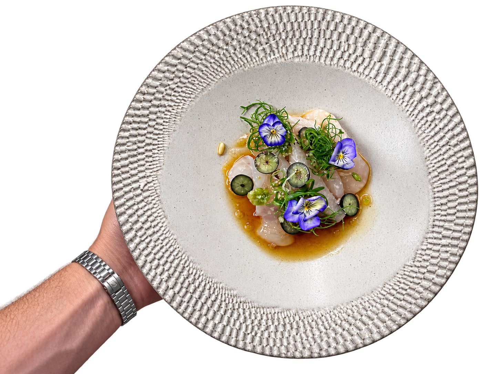
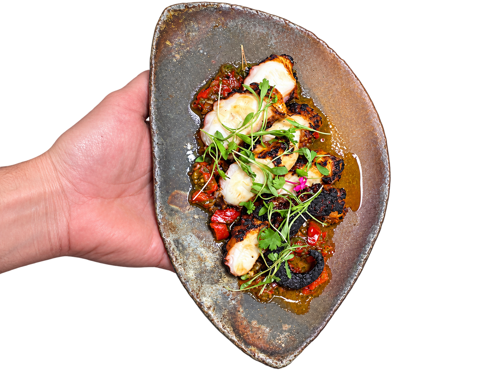
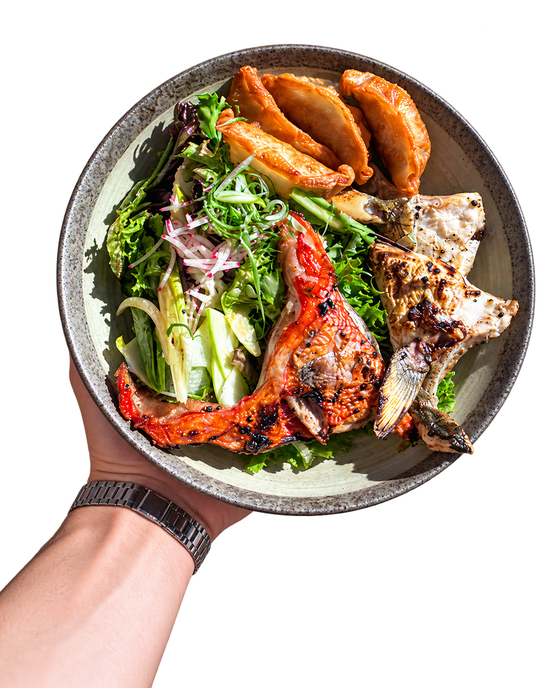
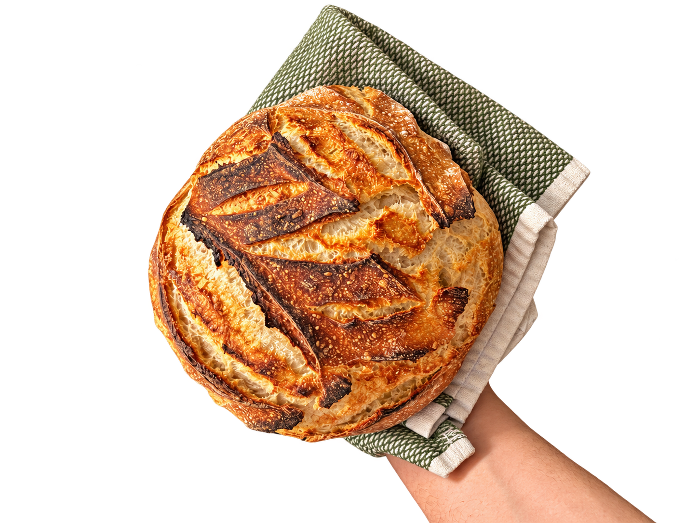
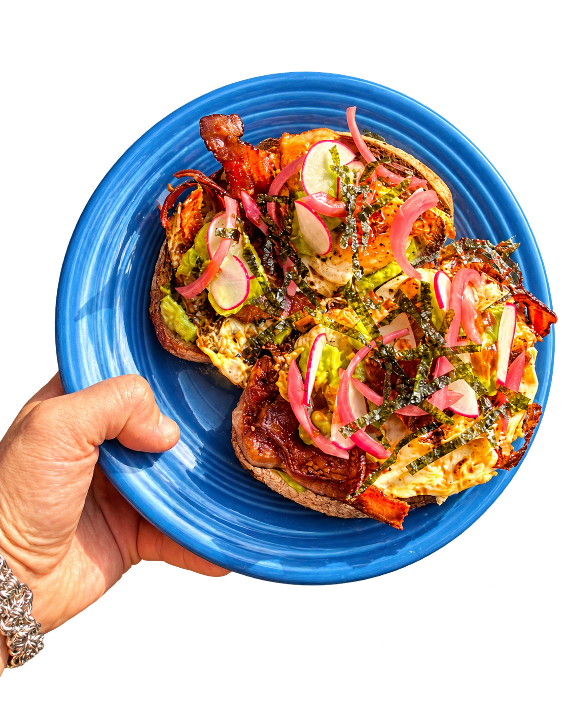
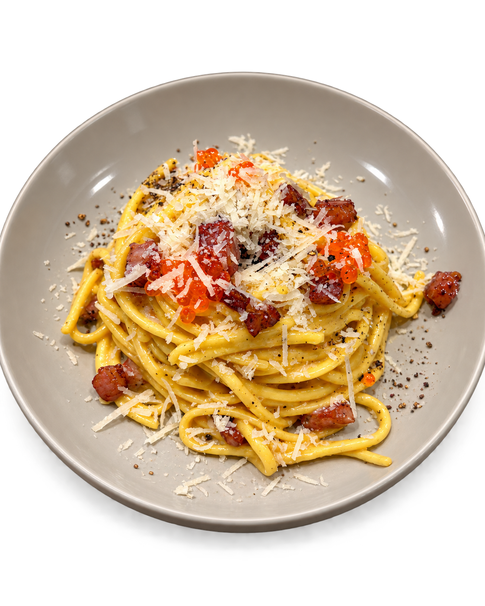
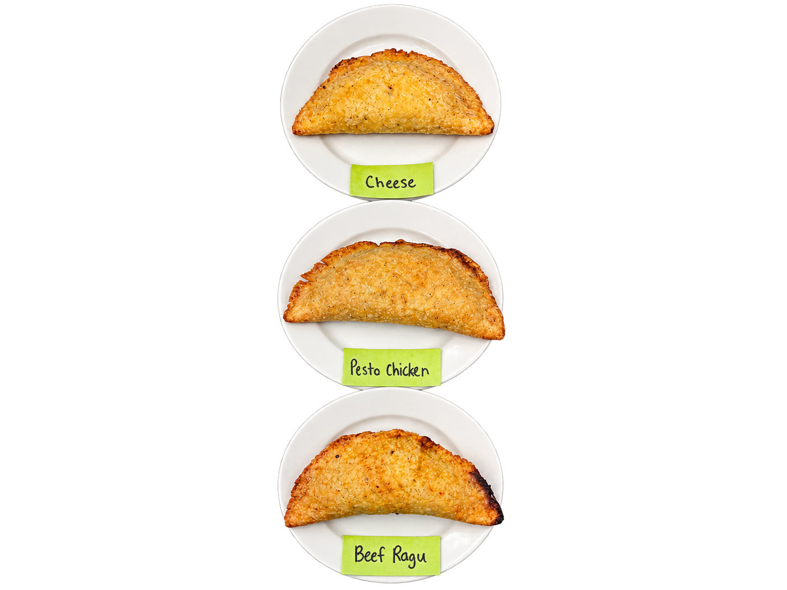
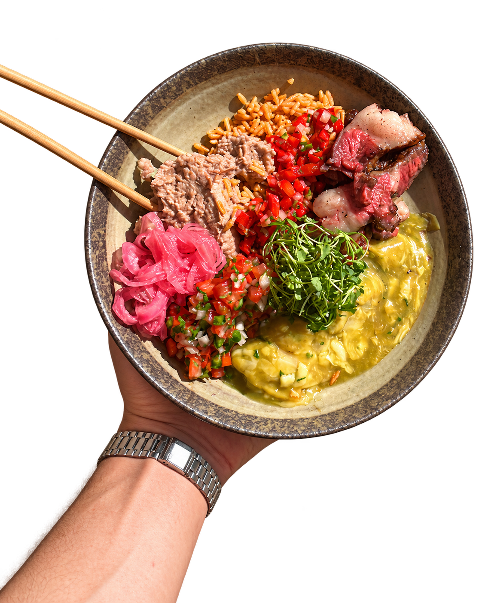

WELCOME TO
orange
objects
A living collection of plates, projects, kitchen experiments and things made by hand.
VIEWTHE ARCHIVE↗

CRUDO IN BLOOM
SELECTED WORK
Things I've
been making.
A few frames from behind the pass, around the table, and everywhere in between. There is always more happening than the finished plate.

The pretty ones,
cut loose from the
background.






Plates, process, experiments, people, and every messy in-between moment.
color / heat / appetite / energy / the good part
ABOUT THE MAKER
 SELF PORTRAIT / CAKE 001
SELF PORTRAIT / CAKE 001
I make things I
want to live with.
I spend a lot of time making food, learning by doing, and looking closely at how things come together. This archive collects finished plates, failed ideas, repetitions, and occasional happy accidents.
It is less a polished portfolio than an ongoing record of making: kitchen work, small experiments, and objects worth keeping around.
BROWSE THE WHOLE ARCHIVE ↗